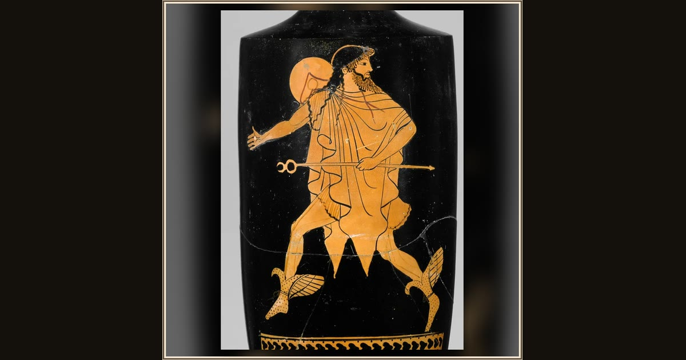

Terracotta lekythos (oil flask)
Tithonos Painter · ca. 480–470 BCE · met
Hermes strides out with his herald’s staff and winged boots on this red-figure oil flask; Socrates derives his name from speech, calling him interpreter and messenger (408a) Explore its place in Plato's Dialogues, Cratylus, section 123.